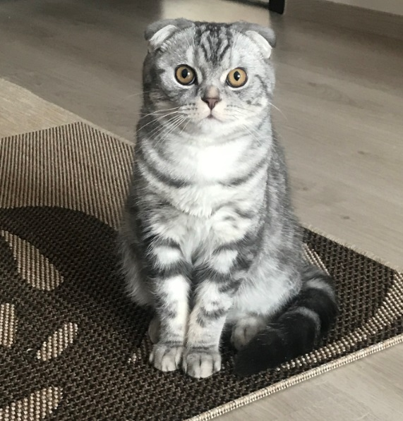

Кошка
Кошка, или домашняя кошка (лат. Félis silvéstris cátus), — домашнее животное, одно из наиболее популярных животных-компаньонов. В настоящее время, в мире насчитывается около 600 млн домашних кошек, выведено около 200 пород, от длинношёрстных (персидская кошка) до лишённых шерсти (сфинксы), признанных и зарегистрированных различными фелинологическими организациями.
Собака
Собака (лат. Canis lupus familiaris) — домашнее животное, одно из наиболее распространённых животных-компаньонов. Сегодня официально признаны около 400 пород собак. Собаки известны своими способностями к обучению, любовью к игре, социальным поведением. Выведены специальные породы собак, предназначенные для различных целей: охоты, охраны, тяги гужевого транспорта и другого, а также декоративные породы (например, болонка, пудель).
Мой кот Марсель

© by Ekaterina Kondratenko